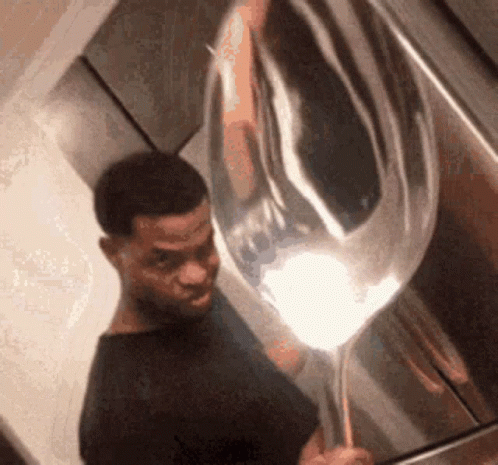

Kierans Repoliste 8=======D ~~~~~~~~~~~~
Creature 2
Link til Creature 2 repo
Creature
Link til Creature repo
Terningekast
Link til Terningekast repo
Firkantkunst
Link til Firkantskunst repo
Link til Creature 2 repo
Link til Creature 2 repo
Link til Creature 2 repo
Link til Creature 2 repo
Link til Creature 2 repo
Link til Creature 2 repo